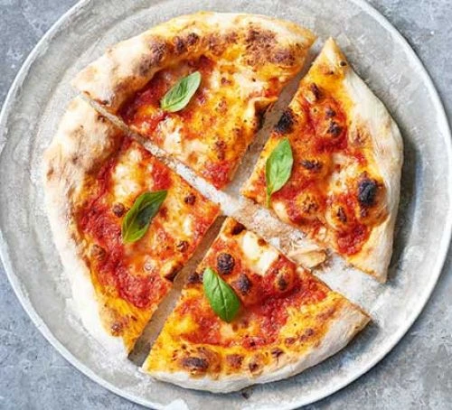

The following recipe is a very simple step by step guied for anyone wanting to make a delisious pizza. Listed below, you will find the ingredents and instructions. The prep time is aprox 1 hour and cook time is 40 min. This recipe will make 4 small pizzas.
First, make the dough. Tip the flour into a bowl and add 300ml tepid water. Mix together and set aside at room temperature for 1 hr. Dissolve the yeast in 2 tbsp water and mix this and 15g of salt through the dough. Cover with cling film and leave somewhere warm to double in size for a few hours. For a sourer flavour, leave in the fridge for atleast 8 hrs and up to 24 hrs. (the longer you leave it the sourer it will be.)
When the dough is ready, tip it onto a lightly floured surface and divide into four. Roll into balls and leave to rest,covered with a tea towel or cling film for another hour.
Now make the tomato sauce. Drain some of the juice from the can and tip the rest into a bowl with the olive oil, oregano and a generous pinch of salt, then either scrunch everything together with your fingers for a chunky sauce or blitz with a stick blender if you want it smooth. Tie the basil stalks together, bruise with the back of a knife and place in the sauce. Leave the sauce at room temperature until needed.
To make the pizza, heat a grill to its highest setting and get a heavy frying pan. On a floured surface push and stretch one of the balls of dough out into a circle roughly the same size as the frying pan. Slip the round onto a floured baking sheet and top with a quarter of the sauce, a scattering of cheese, a few basil leaves and a quarter of the mozzarella.
Get the pan very hot and carefully slide the pizza onto it. Cook for 2 mins, then put the pan under the grill for another 2 mins until the sides are puffed up and the cheese has melted. Lift onto a board, drizzle with a little olive oil if you like, then cut into wedges and serve while you make the next one.